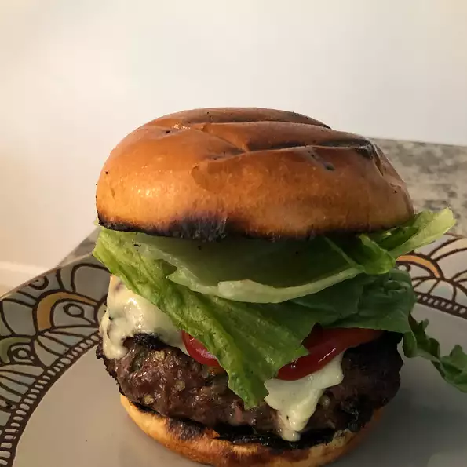

BRONCO BURGER

A hamburger (or burger for short) is a food, which in American English is considered a sandwich (but not in other English varieties, such as British or Australian, in which the definition of sandwich is narrower), consisting of one or more cooked patties usually ground meat, typically beef placed inside a sliced bread.
hamburger, also called burger, ground beef. The term is applied variously to a patty of ground beef, sometimes called hamburg steak, Salisbury steak, or Vienna steak, a sandwich consisting of a patty of ground beef served within a split bread roll, with various garnishes, or the ground beef itself, which is used as a base in many sauces, casseroles, terrines, and the like.
Ingredients
- 5 fresh jalapeno peppers
- 4 pounds ground beef
- salt and pepper to taste
- 1 egg
- ¼ cup steak sauce, (e.g. Heinz 57)
- ¼ cup minced white onion
- 1 teaspoon hot pepper sauce (e.g. Tabasco™)
- 1 pinch dried oregano
- 1 tablespoon Worcestershire sauce
- 1 teaspoon garlic salt
- ¼ cup crushed Fritos® corn chips
- 8 large potato hamburger buns
- 8 slices pepperjack cheese
Steps
- Preheat a grill for high heat. When the grill is hot, roast the jalapeno peppers until blackened on all sides. Place in a plastic bag to sweat and loosen the blackened skin. Rub the skin off, then seed if desired, and chop.
- In a large bowl, use your hands to mix together the chopped jalapenos, ground beef, salt, pepper, egg, steak sauce, onion, hot pepper sauce, oregano, Worcestershire sauce, garlic salt and Fritos®. Divide into 8 balls, and flatten into patties.
- Grill patties for 10 to 15 minutes, turning once, or until well done. I always drink one beer, then flip, drink another beer, then remove from the grill and place on buns. Top each one with a slice of pepperjack cheese and pig out!
Nutrition Facts
Per Serving: 682 calories; protein 49.3g; carbohydrates 27.3g; fat 40.3g; cholesterol 195.7mg; sodium 955.6mg.